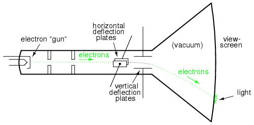

Definition of CRT: A Cathode Ray Tube (CRT) is an electronic device that uses electron beams to create images on a phosphorescent screen.
Principle of CRT:The principle of a CRT is based on the behavior of electrons. An electron gun emits a beam of electrons, which are then directed by electric or magnetic fields. These electrons move across a phosphorescent screen, causing it to emit light upon impact. The movement of the beam and its intensity are controlled to form images.
Cunstruction/Block-Diagram:Block Diagram
consist of Following parts:

- Electron Gun: It generates and accelerates a beam of electrons.
- Focusing and Accelerating Anodes: These elements focus and speed up the electrons towards the screen.
- Deflection Plates/Coils: These steer the electron beam horizontally and vertically.
- Phosphorescent Screen: This screen glows when struck by the electron beam, creating a visible image.
- Glass Enclosure: The entire setup is enclosed in a vacuum-sealed glass tube to prevent electron scattering.
Working of CRO:In a CRT, the electron gun generates an electron beam that is focused and accelerated towards the screen. The deflection plates or coils control the direction of the electron beam. When the beam strikes the phosphorescent screen, the screen glows at the point of impact, creating a spot of light. By rapidly moving the beam across the screen in a controlled manner, an image is formed. The intensity of the electron beam can be varied to change the brightness of the spots on the screen, enabling the display of different shades and contrasts.